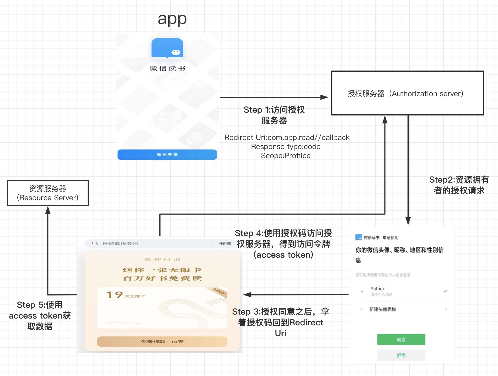
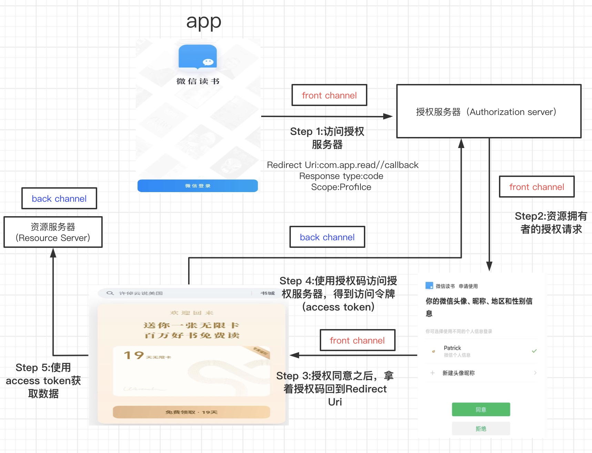

本文介绍一下OAuth(Open Authentication).
账号密码登录
当我们登录一个网站时，我们经常需要输入账号密码。
1 | 网站 数据库 |
局限
- 安全问题。必须保证用户的信息是安全保存的，即使数据库泄露也不会暴露用户密码。常用的方法是对密码做hash操作。
- 维护问题。需要维护一个登录校验的服务。
账号密码登录与OAuth没有关系，在这里写出来只是为了与OAuth做比较。
OAuth
什么是OAuth
OAuth全称是Open Authentication
开放授权（OAuth）是一个开放标准，允许用户让第三方应用访问该用户在某一网站上存储的私密的资源（如照片，视频，联系人列表），而无需将用户名和密码提供给第三方应用。
OAuth允许用户提供一个令牌，而不是用户名和密码来访问他们存放在特定服务提供者的数据。每一个令牌授权一个特定的网站（例如，视频编辑网站)在特定的时段（例如，接下来的2小时内）内访问特定的资源（例如仅仅是某一相册中的视频）。这样，OAuth让用户可以授权第三方网站访问他们存储在另外服务提供者的某些特定信息，而非所有内容。
目前使用最广泛的是OAuth 2.0,OAuth 1.0已经被废弃了。本文中的OAuth都是指OAuth 2.0
认证(Authentication) 与 授权(Authorization)
需要注意的是，OAuth 2.0是为授权(Authorization)的，不是为了认证(Authentication)。下面介绍一下授权与认证的区别。
| 认证(Authentication) | 授权（Authorization） |
|---|---|
| 确定用户是不是他声称的人（证明你是你） | 确定用户是否有权限通行 |
| 需要用户提供证书(credentials)证明自己身份 | 根据规则判断用户是否有权限通行 |
| 发送在授权之前 | 发生在认知之后 |
| 例子：学生进入图书馆，需要出示学生证，表明是自己是一个学生。 | 进入图书馆后，学生能够进入自习室，但不能进入没有开放的区域。 |
OAuth 2.0术语
- 资源拥有者（resource owner): app用户，拥有app想要的数据（用户名，头像等）
- 客户（client）：app
- 授权服务器（Authorization server）:授权的系统
- 资源服务器（Resource server）：拥有用户数据的系统
- 授权许可（Authorization grant）：用户对于数据授权的证明
- Redirect Uri（重定向Uri）：当用户允许之后，重定向到的地方
- 访问令牌（access token）：从资源服务器获取数据的令牌
- 访问（Scope）：决定app可以对用户进行的操作的等级
OAuth 流程
下面以使用微信账号登录微信读书为例子。

Step 1:app 发送请求
当你使用你的微信账号（或者其他OAuth提供者）登录微信读书时，你会得到一个client id和client secret.
当用户点击微信登录的按钮时，会被重定向到微信的授权页面。这是通过向授权服务器(authorization server)发送HTTPS请求，其中HTTPS请求中带有client id等参数。
1 | https://www.weixin.com/oauth? |
Step 2: 用户同意
当用户在授权服务器登录成功后，用户会被提示是否允许微信读书获得他账号的资料。
Step 3:回调
如果用户不同意app访问它的数据，会返回
1 | com.app.read//callback |
如果用户同意，则返回授权码
1 | com.app.read//callback?code=oMsCeLvIaQm6bTrgtp7 |
Step 4:使用授权码，获得access token
获得授权码后，app向授权服务器发送请求，获得access token
1 | POST |
Step 5:访问数据
带上access token向资源服务器访问用户的数据
OAuth 2.0 更多的思考
有的人可能疑惑，为什么在得到授权码（authentication code）之后，还要再访问一次，将授权码换成访问令牌（access token).
这里涉及到2个概念
- Back channel: 高度安全的，服务器与服务器之间的通信
- Front channel: 安全学相对较低，浏览器/移动 app与服务器的通信
